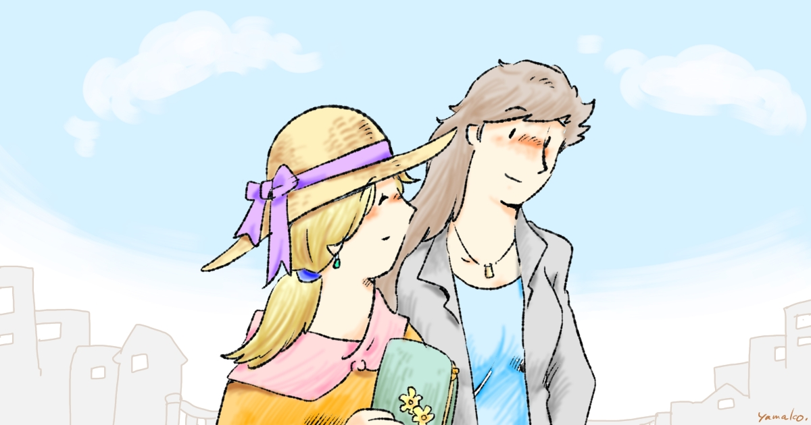

Kindleで読む
やまこ屋の作品は Amazon Kindle で配信中です。各作品のページへのリンクをまとめています。
Kindle の著者別ページの挙動がおかしいため、暫定的に Kindle 専用ページを用意しました。
各作品の詳しい紹介や、ほかの配信サービスへのリンクについては、作品紹介 をご覧ください。
なかよし おねえさんたち シリーズ
なかよし おねえさんたち (4コマ集)

- なかよし おねえさんたち 1
- なかよし おねえさんたち 2
- なかよし おねえさんたち 3
- なかよし おねえさんたち 4
- なかよし おねえさんたち 5
- なかよし おねえさんたち 6
- なかよし おねえさんたち 7
マコさんとナツコさんのおもいで

マコさんと仲間たち

なかよし おねえさんたち 前夜